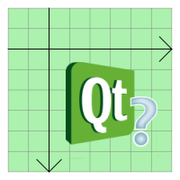

QGraphicsPixmapItem Class
The QGraphicsPixmapItem class provides a pixmap item that you can add to a QGraphicsScene. More...
| Header: | #include <QGraphicsPixmapItem> |
| CMake: | find_package(Qt6 REQUIRED COMPONENTS Widgets) target_link_libraries(mytarget PRIVATE Qt6::Widgets) |
| qmake: | QT += widgets |
| Inherits: | QGraphicsItem |
Public Types
Public Functions
| QGraphicsPixmapItem(QGraphicsItem *parent = nullptr) | |
| QGraphicsPixmapItem(const QPixmap &pixmap, QGraphicsItem *parent = nullptr) | |
| virtual | ~QGraphicsPixmapItem() |
| QPointF | offset() const |
| QPixmap | pixmap() const |
| void | setOffset(const QPointF &offset) |
| void | setOffset(qreal x, qreal y) |
| void | setPixmap(const QPixmap &pixmap) |
| void | setShapeMode(QGraphicsPixmapItem::ShapeMode mode) |
| void | setTransformationMode(Qt::TransformationMode mode) |
| QGraphicsPixmapItem::ShapeMode | shapeMode() const |
| Qt::TransformationMode | transformationMode() const |
Reimplemented Public Functions
| virtual QRectF | boundingRect() const override |
| virtual bool | contains(const QPointF &point) const override |
| virtual bool | isObscuredBy(const QGraphicsItem *item) const override |
| virtual QPainterPath | opaqueArea() const override |
| virtual void | paint(QPainter *painter, const QStyleOptionGraphicsItem *option, QWidget *widget) override |
| virtual QPainterPath | shape() const override |
| virtual int | type() const override |
Detailed Description
To set the item's pixmap, pass a QPixmap to QGraphicsPixmapItem's constructor, or call the setPixmap() function. The pixmap() function returns the current pixmap.
QGraphicsPixmapItem uses pixmap's optional alpha mask to provide a reasonable implementation of boundingRect(), shape(), and contains().

The pixmap is drawn at the item's (0, 0) coordinate, as returned by offset(). You can change the drawing offset by calling setOffset().
You can set the pixmap's transformation mode by calling setTransformationMode(). By default, Qt::FastTransformation is used, which provides fast, non-smooth scaling. Qt::SmoothTransformation enables QPainter::SmoothPixmapTransform on the painter, and the quality depends on the platform and viewport. The result is usually not as good as calling QPixmap::scale() directly. Call transformationMode() to get the current transformation mode for the item.
See also QGraphicsPathItem, QGraphicsRectItem, QGraphicsEllipseItem, QGraphicsTextItem, QGraphicsPolygonItem, QGraphicsLineItem, and Graphics View Framework.
Member Type Documentation
enum QGraphicsPixmapItem::ShapeMode
This enum describes how QGraphicsPixmapItem calculates its shape and opaque area.
The default value is MaskShape.
| Constant | Value | Description |
|---|---|---|
QGraphicsPixmapItem::MaskShape | 0 | The shape is determined by calling QPixmap::mask(). This shape includes only the opaque pixels of the pixmap. Because the shape is more complex, however, it can be slower than the other modes, and uses more memory. |
QGraphicsPixmapItem::BoundingRectShape | 1 | The shape is determined by tracing the outline of the pixmap. This is the fastest shape mode, but it does not take into account any transparent areas on the pixmap. |
QGraphicsPixmapItem::HeuristicMaskShape | 2 | The shape is determine by calling QPixmap::createHeuristicMask(). The performance and memory consumption is similar to MaskShape. |
enum QGraphicsPixmapItem::anonymous
The value returned by the virtual type() function.
| Constant | Value | Description |
|---|---|---|
QGraphicsPixmapItem::Type | 7 | A graphics pixmap item |
Member Function Documentation
[explicit] QGraphicsPixmapItem::QGraphicsPixmapItem(QGraphicsItem *parent = nullptr)
Constructs a QGraphicsPixmapItem. parent is passed to QGraphicsItem's constructor.
See also QGraphicsScene::addItem().
[explicit] QGraphicsPixmapItem::QGraphicsPixmapItem(const QPixmap &pixmap, QGraphicsItem *parent = nullptr)
Constructs a QGraphicsPixmapItem, using pixmap as the default pixmap. parent is passed to QGraphicsItem's constructor.
See also QGraphicsScene::addItem().
[virtual noexcept] QGraphicsPixmapItem::~QGraphicsPixmapItem()
Destroys the QGraphicsPixmapItem.
[override virtual] QRectF QGraphicsPixmapItem::boundingRect() const
Reimplements: QGraphicsItem::boundingRect() const.
[override virtual] bool QGraphicsPixmapItem::contains(const QPointF &point) const
Reimplements: QGraphicsItem::contains(const QPointF &point) const.
[override virtual] bool QGraphicsPixmapItem::isObscuredBy(const QGraphicsItem *item) const
Reimplements: QGraphicsItem::isObscuredBy(const QGraphicsItem *item) const.
QPointF QGraphicsPixmapItem::offset() const
Returns the pixmap item's offset, which defines the point of the top-left corner of the pixmap, in local coordinates.
See also setOffset().
[override virtual] QPainterPath QGraphicsPixmapItem::opaqueArea() const
Reimplements: QGraphicsItem::opaqueArea() const.
[override virtual] void QGraphicsPixmapItem::paint(QPainter *painter, const QStyleOptionGraphicsItem *option, QWidget *widget)
Reimplements: QGraphicsItem::paint(QPainter *painter, const QStyleOptionGraphicsItem *option, QWidget *widget).
QPixmap QGraphicsPixmapItem::pixmap() const
Returns the item's pixmap, or an invalid QPixmap if no pixmap has been set.
See also setPixmap().
void QGraphicsPixmapItem::setOffset(const QPointF &offset)
Sets the pixmap item's offset to offset. QGraphicsPixmapItem will draw its pixmap using offset for its top-left corner.
See also offset().
void QGraphicsPixmapItem::setOffset(qreal x, qreal y)
This convenience function is equivalent to calling setOffset(QPointF(x, y)).
void QGraphicsPixmapItem::setPixmap(const QPixmap &pixmap)
Sets the item's pixmap to pixmap.
See also pixmap().
void QGraphicsPixmapItem::setShapeMode(QGraphicsPixmapItem::ShapeMode mode)
Sets the item's shape mode to mode. The shape mode describes how QGraphicsPixmapItem calculates its shape. The default mode is MaskShape.
See also shapeMode() and ShapeMode.
void QGraphicsPixmapItem::setTransformationMode(Qt::TransformationMode mode)
Sets the pixmap item's transformation mode to mode, and toggles an update of the item. The default mode is Qt::FastTransformation, which provides quick transformation with no smoothing.
Qt::SmoothTransformation enables QPainter::SmoothPixmapTransform on the painter, and the quality depends on the platform and viewport. The result is usually not as good as calling QPixmap::scale() directly.
See also transformationMode().
[override virtual] QPainterPath QGraphicsPixmapItem::shape() const
Reimplements: QGraphicsItem::shape() const.
QGraphicsPixmapItem::ShapeMode QGraphicsPixmapItem::shapeMode() const
Returns the item's shape mode. The shape mode describes how QGraphicsPixmapItem calculates its shape. The default mode is MaskShape.
See also setShapeMode() and ShapeMode.
Qt::TransformationMode QGraphicsPixmapItem::transformationMode() const
Returns the transformation mode of the pixmap. The default mode is Qt::FastTransformation, which provides quick transformation with no smoothing.
See also setTransformationMode().
[override virtual] int QGraphicsPixmapItem::type() const
Reimplements: QGraphicsItem::type() const.